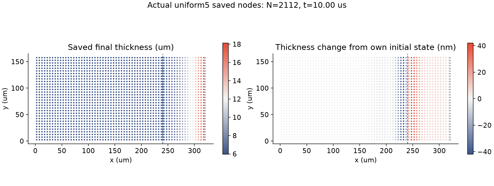
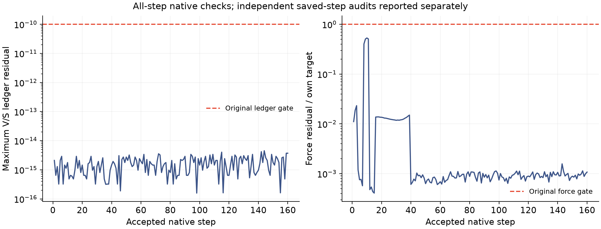

实际原生算例终态 · u5_dt00625
5 微米网格，
一组已算到 10 微秒。
2112 个节点、160 个接受步；该算例通过原生检查和保存步独立收支／机械功核对。
真实保存的粒子与膜厚

膜节点最终最小厚度 5.958035 微米。它是当前短时释放算例的输出，尚非真实框架膜长期排液或实验验证。
哪些检查确实完成了？

全局／区域液量与表活账本最大残差 4.533e-15，力残差／目标最大比例 0.53209，能量预算超额最大 0.000e+00，准备压力残差 4.698e-13。原门槛分别为 10⁻¹⁰、1.000001、10⁻⁷、10⁻⁸。
此前 56 项候选检查通过原始哈希复用，本页没有重跑这些单元测试。原生独立算例共耗时 2.101 小时，时间步 0.06250 微秒；使用经过等价性验证的局部二阶组装程序，物理方程、材料和验收容差未变。
还不能从这里得出什么？
独立保存步的离散收支和机械功通过，不代表连续物理法向通量、牵引力或实验已经验证。完整时间配对、匹配时间步的空间比较、50／200 微秒、交换系数、薄膜元厚度比、整体条纹和保留工况实验仍需继续。
查看原始配对计划与启动快照。本页记录单组形成终态时的证据，不是实时进度页；另一算例的完成状态与最终配对结论另行发布。
完整原始数据、审计与复现
本页数值摘要 · 原生终态记录 · 完整冻结参数与源码 · 归档范围 · 复现说明
独立审计封存 · 独立标量核对 · 独立机械核对 · 关闭后的原生日志
13 份原生文件及日志共 34.848 MB，已实际恢复并逐文件校验；每卷 ZIP 小于 5 MB。原始字节清单 · 恢复核验 · 恢复脚本。
- 完整原始数据分卷 1
- 完整原始数据分卷 2
- 完整原始数据分卷 3
- 完整原始数据分卷 4
- 完整原始数据分卷 5
- 完整原始数据分卷 6
- 完整原始数据分卷 7
- 完整原始数据分卷 8
- 完整原始数据分卷 9
- 完整原始数据分卷 10
恢复：python restore_raw.py REPORT_DIRECTORY NEW_OUTPUT_DIRECTORY，拒绝覆盖既有文件。处理后的文本可能经 Git 换行规范化，ZIP 内原始字节完整保留。